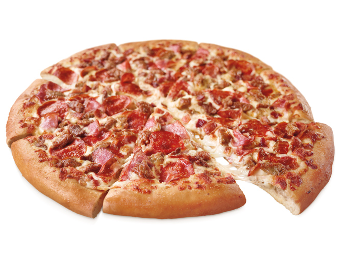

Meat Lovers Pizza

Description
A recipe on how to make a meat lovers pizza with all your favourite mouth watering toppings.
Ingredients
- 1 portion pizza dough
- 2 tbsp barbecue sauce
- 1 tbsp pizza sauce
- 1 pepperoni stick, sliced
- 1 chorizo sausage, sliced
- 100g beef mince, cooked
- 50g ham, diced
- 1 tbsp mozzarella cheese
Steps
- Preheat oven to 200°C. Roll out pizza dough and place on hot pizza stone or baking tray.
- Pour the barbecue sauce and pizza sauce onto the dough and use the back of a dessert spoon to combine the two sauces and spread evenly over the dough.
- Spread the cooked mince over the dough then place the pepperoni, sausage and ham on top.
- Scatter the cheese evenly across the pizza. Bake in the oven for 20-25 mins or until the cheese is golden and melted.